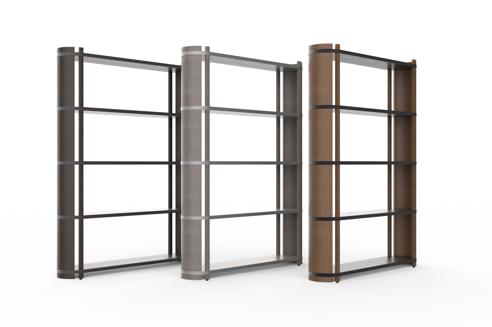
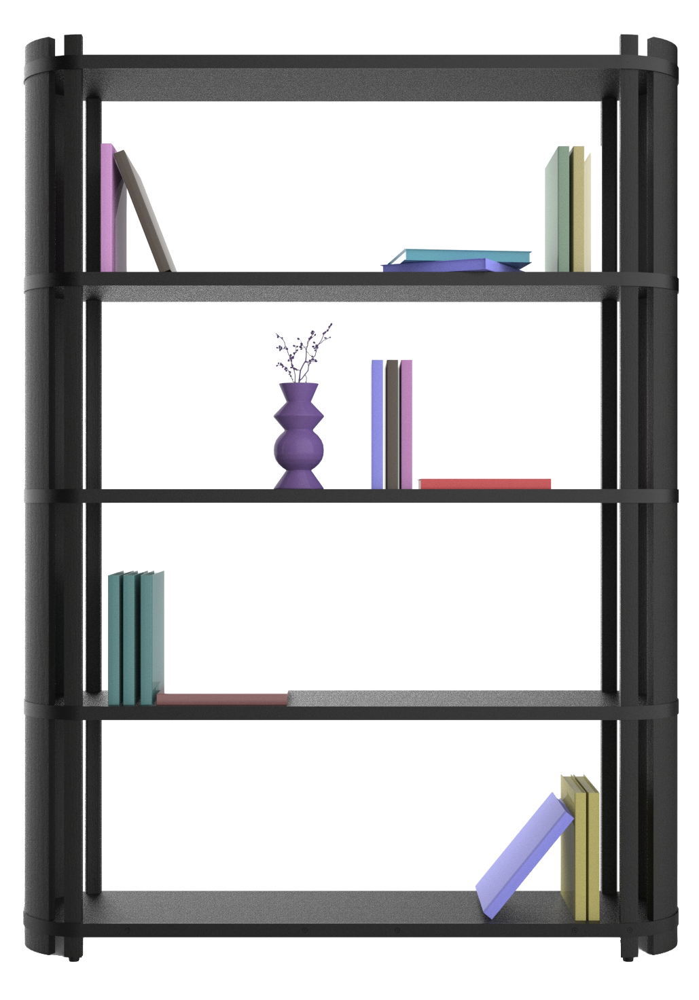
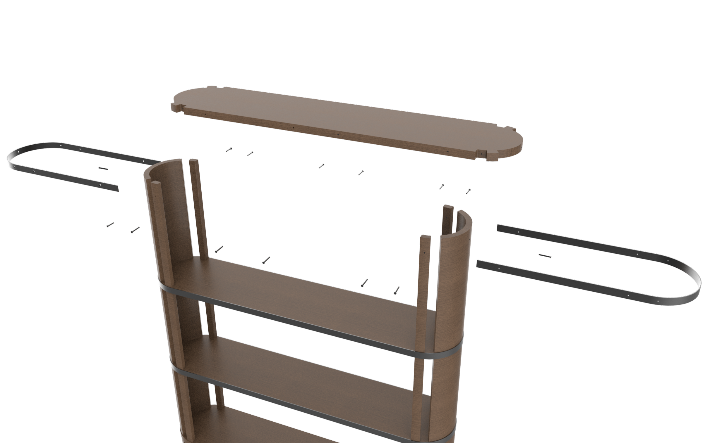
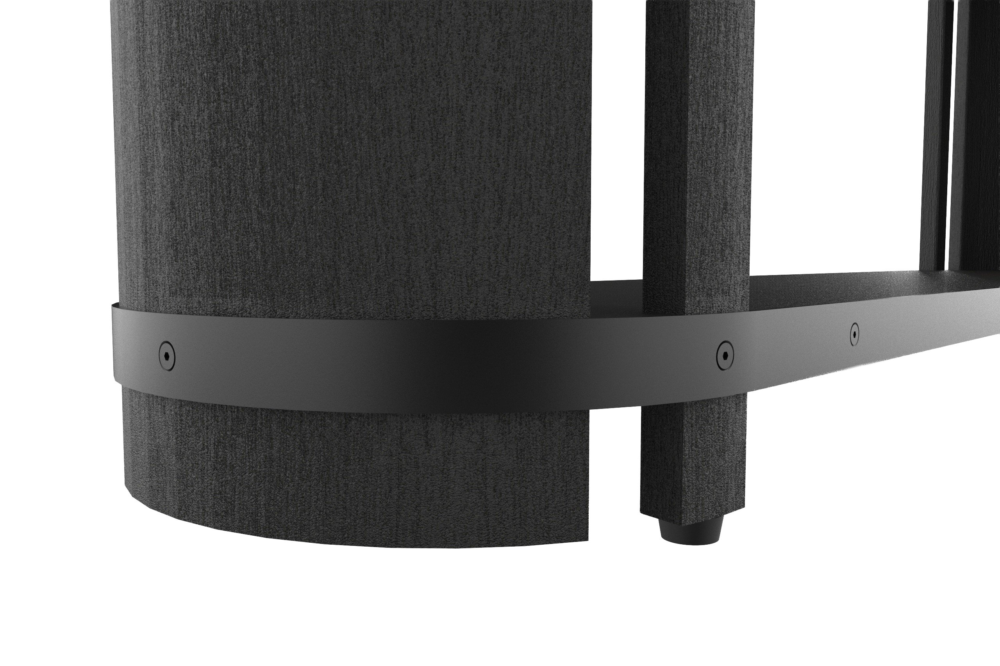
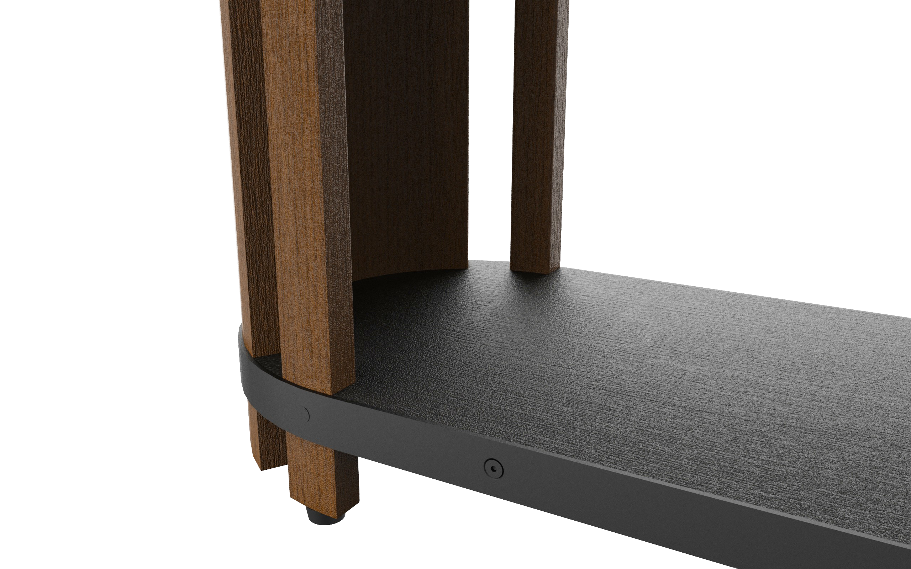
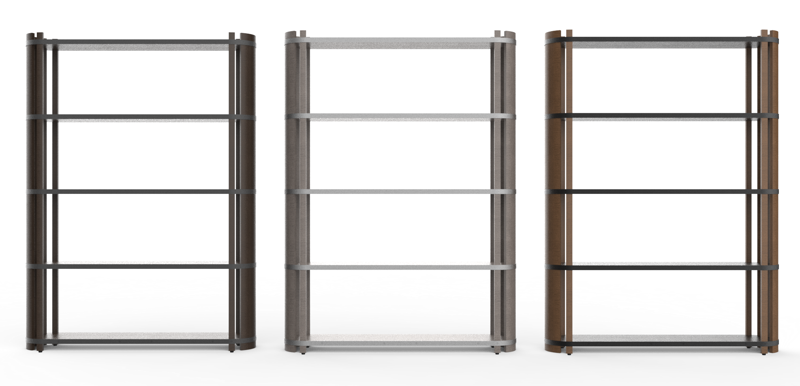
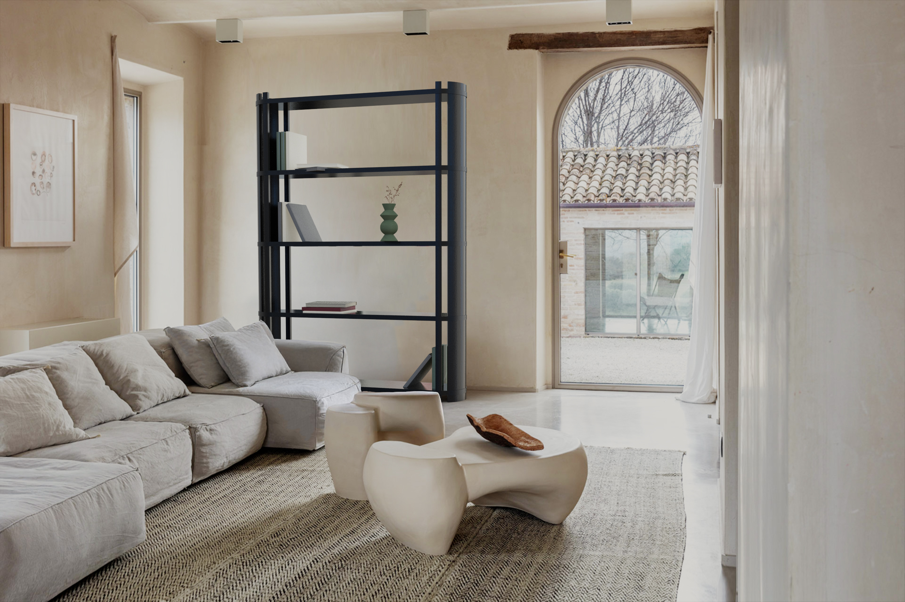
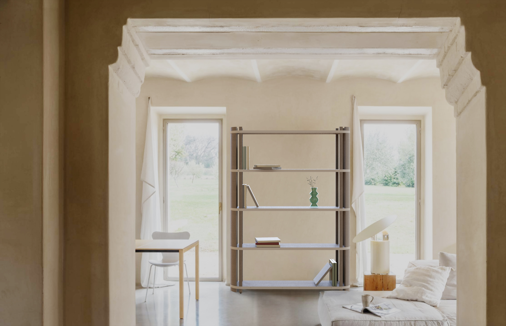

TUN
SHELF
YEAR: September 2024 – January 2025
DESIGNERS: Marika Brambilla, Paolo Corsaro,
Emma Listorto, Alice Zanotto
MY ROLE & SKILLS: Concept development,
3D modelling, rendering, technical drawings, product communication
COURSE: Product Design Studio – Furniture Design Section,
Second Year, Politecnico di Milano
LECTURERS: Alessandro Deserti, Alberto Sala,
Idelfonso Colombo

BRIEF: Create a bold structure that adds personality to the space it’s placed in. Take inspiration from the shapes and details of wine barrels. Incorporate height and color to convey a sense of grandeur and linearity.
Tùn is a freestanding bookcase supported by curved wooden side panels. The dark wood shelves are surrounded by a metal band that secures them to the side walls from the outside. The screws are intentionally visible and serve both a structural and aesthetic purpose, lending character to the structure. It takes its name from the ancient term “Tùn,” meaning “large barrel.”






